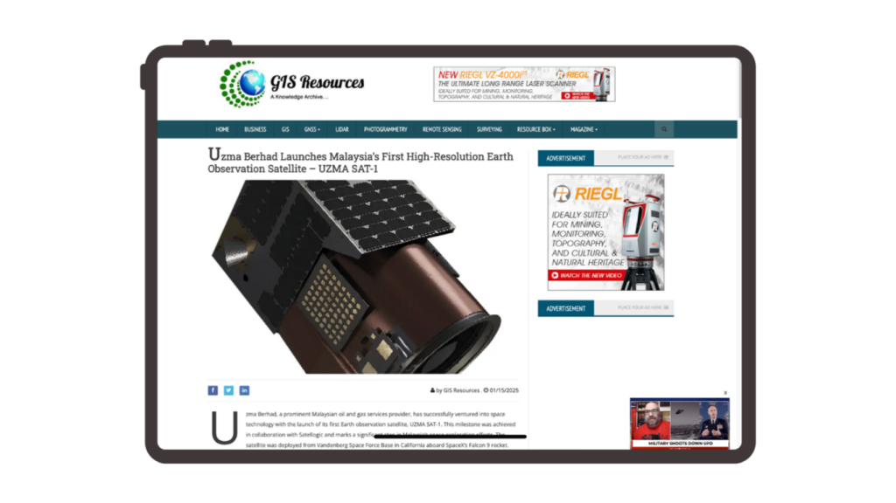
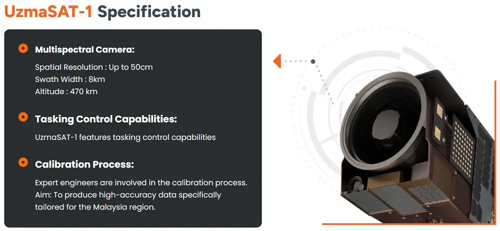

- Press Release, UzmaSAT-1
Uzma Berhad Launches Malaysia’s First High-Resolution Earth Observation Satellite – UZMASAT-1
- January 22, 2025
- By Media GeoAI
Uzma Berhad, a prominent Malaysian oil and gas services provider, has successfully ventured into space technology with the launch of its first Earth observation satellite, UZMA SAT-1. This milestone was achieved in collaboration with Satellogic and marks a significant step in Malaysia’s space exploration efforts. The satellite was deployed from Vandenberg Space Force Base in California aboard SpaceX’s Falcon 9 rocket.
Advanced Imaging for Diverse Applications
UZMASAT-1 operates approximately 500 kilometres above the Earth, capturing high-resolution images with a spatial resolution of 50 to 70 centimetres. This capability allows it to identify small objects, such as vehicles, with remarkable clarity. The satellite is equipped with multi-spectral sensors, including RGB and near-infrared, providing insights into areas like vegetation health and soil moisture, vital for precision monitoring.
Transforming Key Sectors
The satellite is poised to impact several industries in Malaysia:
Disaster Management: By providing detailed imagery of flood-affected areas, UZMA SAT-1 aids authorities in optimizing relief efforts and identifying safe locations for shelters.
Agriculture and Plantations: It offers precise crop health assessments and yield predictions. The Malaysian Palm Oil Board (MPOB) plans to leverage this technology to support plantation companies in obtaining the Sustainability Palm Oil Certification, enhancing the global competitiveness of Malaysian palm oil.

Economic and Diplomatic Potential
Datuk Ahmad Sabirin Arshad, Group President and CEO of SIRIM Berhad, highlighted the satellite’s potential to bolster Malaysia’s economy, particularly as the country chairs ASEAN this year. The technology offers a platform for Malaysia to lead in space innovation and foster technological diplomacy in the region.
Rushdi Abdul Rahim, CEO of the Malaysian Industry-Government Group for High Technology (MiGHT), emphasized that Uzma’s investment showcases the power of public-private partnerships in advancing national technological sovereignty.
A New Frontier for Malaysia
Uzma’s diversification into space technology reflects its commitment to innovation and sustainability. The launch of UZMA SAT-1 is a monumental achievement that not only enhances Malaysia’s capabilities in Earth observation but also opens new opportunities for technological and economic growth.
This groundbreaking initiative signifies a leap forward for Malaysia in the competitive realm of global space exploration.
Published by: GIS Resources.com | 15 January, 2025
Source: The Malaysian Reserved
Related Posts
Looking for Answers to Your Industry Issues?
If you want us to share more about space technology, EUDR, EO satellite applications, and industry related, feel free to drop your contact and experience the technology yourself.